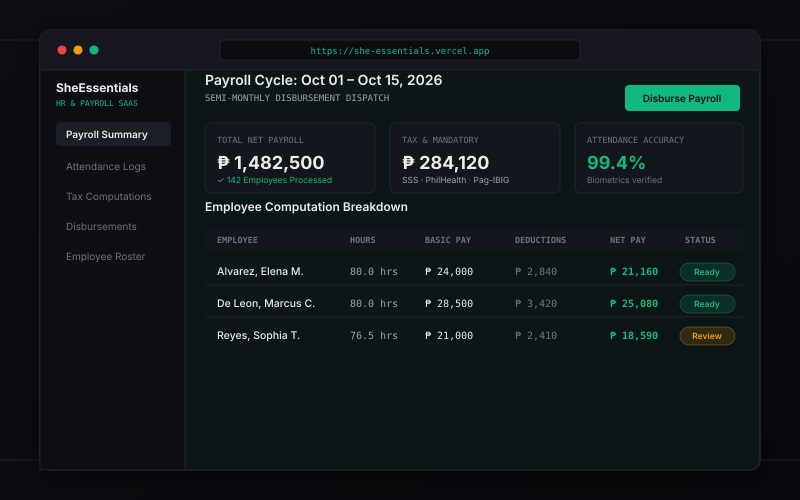
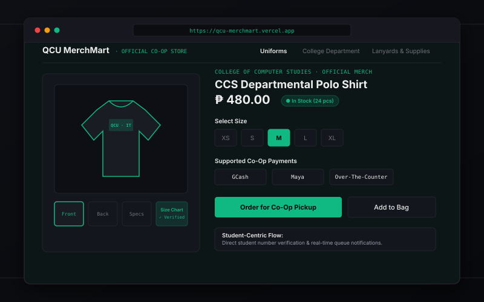
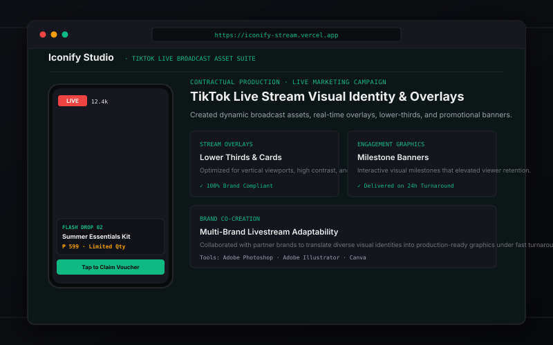

UI/UX & Wireframing
Designing intuitive user journeys, interactive wireframes, and scalable design systems in Figma. Experienced in mapping out complex workflows for enterprise payroll software and university e-commerce portals.
DEVELOPER PORTFOLIO · 2026
Developer focused on building thoughtful, functional, and user-friendly digital experiences.
I'm continuously developing my skills in web development, exploring new technologies, and building projects that turn ideas into practical solutions. 4th Year BSIT student combining UI/UX design, frontend development, and foundational IT support.
Franc Sant Alcaide
BSIT Student & Designer
Core capabilities spanning interface design, frontend implementation, and systems support.
Designing intuitive user journeys, interactive wireframes, and scalable design systems in Figma. Experienced in mapping out complex workflows for enterprise payroll software and university e-commerce portals.
Translating design mockups into clean, semantic HTML5, modern CSS3, and JavaScript. Focusing on responsive layouts that adapt naturally across smartphones, tablets, and desktop displays with fast load speeds.
Creating high-impact visual assets, broadcast overlays, lower thirds, and marketing graphics for livestream environments (TikTok Live) and brand campaigns using Adobe Photoshop, Illustrator, and Canva.
Providing dependable technical diagnostics, hardware troubleshooting, operating system configuration, software installations, and workstation equipment management to keep office workflows running smoothly.
Background, problem-solving approach, and professional goals.
I'm Franc Sant Alcaide, a 4th Year Bachelor of Science in Information Technology student at Quezon City University with a passion for building websites and digital products that are simple to use, visually clear, and practical.
My technical journey bridges the gap between interface design and computer systems. Having worked contractually in digital graphic creation for live-stream broadcasts and customer support operations, I understand both the visual polish required to engage users and the behind-the-scenes discipline needed to resolve technical issues.
I am eager to contribute my technical foundation, design proficiencies, and problem-solving skills to an innovative On-the-Job Training (OJT) team where I can collaborate on production software and continue growing as a developer.
Quezon City University
Core coursework in Systems Analysis & Design, Database Management, Web Development, Network Administration (CCNA Fundamentals), and Computer Ethics.
Interfaces should never confuse users. I organize data hierarchies so vital information and actions are immediately obvious.
Whether troubleshooting workstation hardware or debugging layout issues, I isolate variables step by step to find root causes.
Web technologies and design patterns evolve quickly. I take pride in active learning, seminar training, and hands-on project exploration.
Practical tools, technologies, and competencies used in actual projects.
Building responsive interfaces, semantic structure, and accessible components.
Crafting wireframes, interactive user flows, and structured design systems.
Producing engaging digital marketing assets and broadcast graphics.
Hardware/software diagnostics, productivity tools, and documentation.
Real-world systems, UI/UX flows, and visual assets built with care.

Designed and optimized end-to-end user flows for complex HR and payroll workflows, reducing administrative friction for both HR personnel and employees. Created intuitive, data-dense dashboards for attendance tracking, tax computations, and salary disbursements.

Designed and optimized end-to-end user flows for university uniform and supply purchasing, streamlining checkout friction for students. Built intuitive product pages with sizing charts, real-time inventory tracking, and accessible multi-channel payment integrations.

Designed high-impact visual assets and broadcast overlays optimized for live-stream environments on TikTok Live. Collaborated with partner brands to translate identities into real-time dynamic graphics that enhanced audience engagement under rapid turnarounds.
Work history, university education, and certified technical training.
Focus on professional standards, digital copyright, ethical cyberspace conduct, and data privacy regulations.
Navigating IT Trends and Emerging Technologies, cloud paradigms, modern software workflows, and digital innovation.
Foundational Cisco networking training covering topologies, IPv4/IPv6 addressing, routing protocols, and switches.
Cyber defense principles, authentication security, threat mitigation, and endpoint data protection.
Have a project or opportunity in mind? I'm open to connecting.
I'm open to connecting with people, learning from new opportunities, and collaborating on meaningful projects. Actively looking for an innovative team for my On-the-Job Training (OJT).
Quezon City, Philippines · (Local Time)